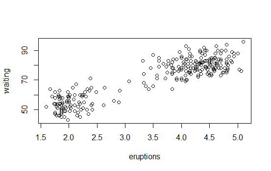
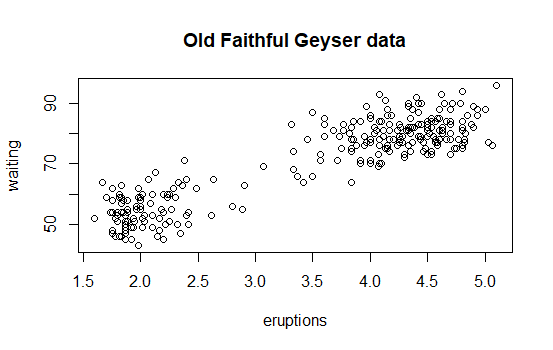
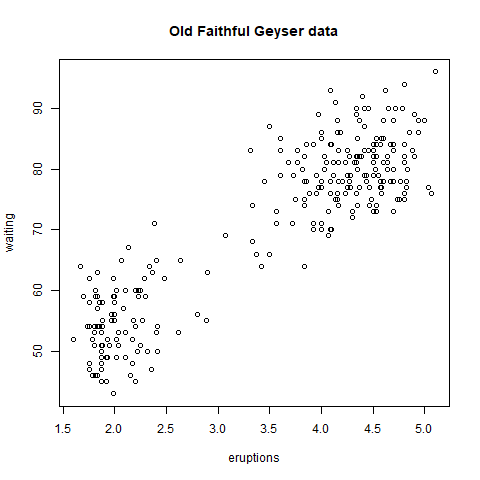

Graphics Devices in R
R version 4.0.0 (2020-04-24) -- "Arbor Day"
Copyright (C) 2020 The R Foundation for Statistical Computing
Platform: x86_64-w64-mingw32/x64 (64-bit)
R is free software and comes with ABSOLUTELY NO WARRANTY.
You are welcome to redistribute it under certain conditions.
Type 'license()' or 'licence()' for distribution details.
R is a collaborative project with many contributors.
Type 'contributors()' for more information and
'citation()' on how to cite R or R packages in publications.
Type 'demo()' for some demos, 'help()' for on-line help, or
'help.start()' for an HTML browser interface to help.
Type 'q()' to quit R.
setwd("C:/Users/kk/PortableApps/Git/home/k-allika/repos/DataScienceWithR/04_Exploratory_Data_Analysis/week01/workspace")
library(swirl)
| Hi! Type swirl() when you are ready to begin.
swirl()
| Welcome to swirl! Please sign in. If you've been here before, use the same name as you did
| then. If you are new, call yourself something unique.
What shall I call you? Krishnakanth Allika
| Please choose a course, or type 0 to exit swirl.
1: Exploratory Data Analysis
2: Take me to the swirl course repository!
Selection: 1
| Please choose a lesson, or type 0 to return to course menu.
1: Principles of Analytic Graphs 2: Exploratory Graphs
3: Graphics Devices in R 4: Plotting Systems
5: Base Plotting System 6: Lattice Plotting System
7: Working with Colors 8: GGPlot2 Part1
9: GGPlot2 Part2 10: GGPlot2 Extras
11: Hierarchical Clustering 12: K Means Clustering
13: Dimension Reduction 14: Clustering Example
15: CaseStudy
Selection: 3
| | 0%
| Graphics_Devices_in_R. (Slides for this and other Data Science courses may be found at
| github https://github.com/DataScienceSpecialization/courses/. If you care to use them,
| they must be downloaded as a zip file and viewed locally. This lesson corresponds to
| 04_ExploratoryAnalysis/Graphics_Devices_in_R.)
...
|== | 3%
| As the title suggests, this will be a short lesson introducing you to graphics devices in
| R. So, what IS a graphics device?
...
|===== | 6%
| Would you believe that it is something where you can make a plot appear, either a screen
| device, such as a window on your computer, OR a file device?
...
|======= | 9%
| There are several different kinds of file devices with particular characteristics and
| hence uses. These include PDF, PNG, JPEG, SVG, and TIFF. We'll talk more about these
| later.
...
|========== | 12%
| To be clear, when you make a plot in R, it has to be "sent" to a specific graphics device.
| Usually this is the screen (the default device), especially when you're doing exploratory
| work. You'll send your plots to files when you're ready to publish a report, make a
| presentation, or send info to colleagues.
...
|============ | 15%
| How you access your screen device depends on what computer system you're using. On a Mac
| the screen device is launched with the call quartz(), on Windows you use the call
| windows(), and on Unix/Linux x11(). On a given platform (Mac, Windows, Unix/Linux) there
| is only one screen device, and obviously not all graphics devices are available on all
| platforms (i.e. you cannot launch windows() on a Mac).
...
|=============== | 18%
| Run the R command ?Devices to see what graphics devices are available on your system.
?Devices
| That's correct!
|================= | 21%
| R Documentation shows you what's available.
...
|==================== | 24%
| There are two basic approaches to plotting. The first, plotting to the screen, is the most
| common. It's simple - you call a plotting function like plot, xyplot, or qplot (which you
| call depends on the plotting system you favor, but that's another lesson), so that the
| plot appears on the screen. Then you annotate (add to) the plot if necessary.
...
|====================== | 26%
| As an example, run the R command with with 2 arguments. The first is a dataset, faithful,
| which comes with R, and the second is a call to the base plotting function plot. Your call
| to plot should have two arguments, eruptions and waiting. Try this now to see what
| happens.
with(faithful,plot(eruptions,waiting))

| Excellent job!
|======================== | 29%
| See how R created a scatterplot on the screen for you? This shows that relationship
| between eruptions of the geyser Old Faithful and waiting time. Now use the R function
| title with the argument main set equal to the string "Old Faithful Geyser data". This is
| an annotation to the plot.
title(main="Old Faithful Geyser data")

| You are amazing!
|=========================== | 32%
| Simple, right? Now run the command dev.cur(). This will show you the current plotting
| device, the screen.
dev.cur()
RStudioGD
2
| That's the answer I was looking for.
|============================= | 35%
| The second way to create a plot is to send it to a file device. Depending on the type of
| plot you're making, you explicitly launch a graphics device, e.g., a pdf file. Type the
| command pdf(file="myplot.pdf") to launch the file device. This will create the pdf file
| myplot.pdf in your working directory.
pdf(file="myplot.pdf")
| Nice work!
|================================ | 38%
| You then call the plotting function (if you are using a file device, no plot will appear
| on the screen). Run the with command again to plot the Old Faithful data. Use the up arrow
| key to recover the command and save yourself some typing.
with(faithful,plot(eruptions,waiting))
| That's correct!
|================================== | 41%
| Now rerun the title command and annotate the plot. (Up arrow keys are great!)
title(main="Old Faithful Geyser data")
| You are doing so well!
|===================================== | 44%
| Finally, when plotting to a file device, you have to close the device with the command
| dev.off(). This is very important! Don't do it yet, though. After closing, you'll be able
| to view the pdf file on your computer.
...
|======================================= | 47%
| There are two basic types of file devices, vector and bitmap devices. These use different
| formats and have different characteristics. Vector formats are good for line drawings and
| plots with solid colors using a modest number of points, while bitmap formats are good for
| plots with a large number of points, natural scenes or web-based plots.
...
|========================================== | 50%
| We'll mention 4 specific vector formats. The first is pdf, which we've just used in our
| example. This is useful for line-type graphics and papers. It resizes well, is usually
| portable, but it is not efficient if a plot has many objects/points.
...
|============================================ | 53%
| The second is svg which is XML-based, scalable vector graphics. This supports animation
| and interactivity and is potentially useful for web-based plots.
...
|============================================== | 56%
| The last two vector formats are win.metafile, a Windows-only metafile format, and
| postscript (ps), an older format which also resizes well, is usually portable, and can be
| used to create encapsulated postscript files. Unfortunately, Windows systems often don’t
| have a postscript viewer.
...
|================================================= | 59%
| We'll also mention 4 different bitmap formats. The first is png (Portable Network
| Graphics) which is good for line drawings or images with solid colors. It uses lossless
| compression (like the old GIF format), and most web browsers can read this format
| natively. In addition, png is good for plots with many points, but it does not resize
| well.
...
|=================================================== | 62%
| In contrast, jpeg files are good for photographs or natural scenes. They use lossy
| compression, so they're good for plots with many points. Files in jpeg format don't resize
| well, but they can be read by almost any computer and any web browser. They're not great
| for line drawings.
...
|====================================================== | 65%
| The last two bitmap formats are tiff, an older lossless compression meta-format and bmp
| which is a native Windows bitmapped format.
...
|======================================================== | 68%
| Although it is possible to open multiple graphics devices (screen, file, or both), when
| viewing multiple plots at once, plotting can only occur on one graphics device at a time.
...
|=========================================================== | 71%
| The currently active graphics device can be found by calling dev.cur(). Try it now to see
| what number is assigned to your pdf device.
dev.cur()
4
| Your dedication is inspiring!
|============================================================= | 74%
| Now use dev.off() to close the device.
dev.off()
RStudioGD
2
View myplot.pdf
| You are quite good my friend!
|=============================================================== | 76%
| Now rerun dev.cur() to see what integer your plotting window is assigned.
dev.cur()
RStudioGD
2
| You got it!
|================================================================== | 79%
| The device is back to what it was when you started. As you might have guessed, every open
| graphics device is assigned an integer greater than or equal to 2. You can change the
| active graphics device with dev.set(
| with the graphics device you want to switch to.
...
|==================================================================== | 82%
| You can also copy a plot from one device to another. This can save you some time but
| beware! Copying a plot is not an exact operation, so the result may not be identical to
| the original. R provides some functions to help you do this. The function dev.copy copies
| a plot from one device to another, and dev.copy2pdf specifically copies a plot to a PDF
| file.
...
|======================================================================= | 85%
| Just for fun, rerun the with command again, with(faithful, plot(eruptions, waiting)), to
| plot the Old Faithful data. Use the up arrow key to recover the command if you don't feel
| like typing.
with(faithful,plot(eruptions,waiting))
| You are really on a roll!
|========================================================================= | 88%
| Now rerun the title command, title(main = "Old Faithful Geyser data"), to annotate the
| plot. (Up arrow keys are great!)
title(main="Old Faithful Geyser data")
| You are really on a roll!
|============================================================================ | 91%
| Now run dev.copy with the 2 arguments. The first is png, and the second is file set equal
| to "geyserplot.png". This will copy your screen plot to a png file in your working
| directory which you can view AFTER you close the device.
dev.copy(png,"geyserplot.png")
png
4
| Not quite, but you're learning! Try again. Or, type info() for more options.
| Type dev.copy(png, file = "geyserplot.png") at the command prompt.
dev.copy(png,file="geyserplot.png")
png
5
| That's correct!
|============================================================================== | 94%
| Don't forget to close the PNG device! Do it NOW!!! Then you'll be able to view the file.
dev.off()
RStudioGD
2

| Keep working like that and you'll get there!
|================================================================================= | 97%
| Congrats! We hope you found this lesson deviced well!
...
|===================================================================================| 100%
| Would you like to receive credit for completing this course on Coursera.org?
1: Yes
2: No
Selection: 1
What is your email address? xxxxxx@xxxxxxxxxxxx
What is your assignment token? xXxXxxXXxXxxXXXx
Grade submission succeeded!
| All that hard work is paying off!
| You've reached the end of this lesson! Returning to the main menu...
| Please choose a course, or type 0 to exit swirl.
1: Exploratory Data Analysis
2: Take me to the swirl course repository!
Selection: 0
| Leaving swirl now. Type swirl() to resume.
Last updated 2020-05-04 13:23:19.344014 IST
Comments